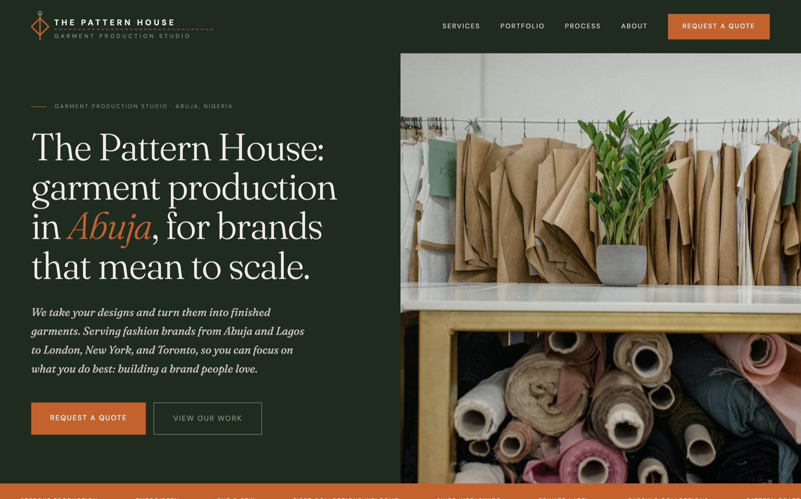
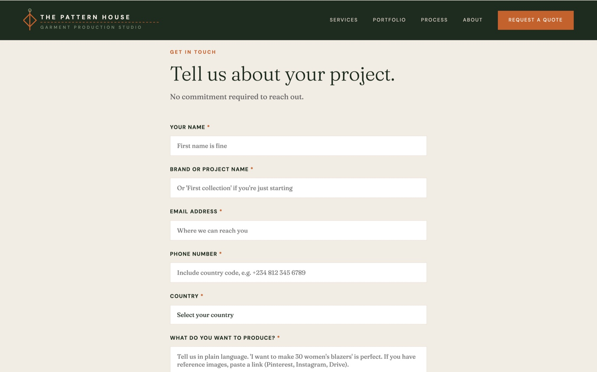
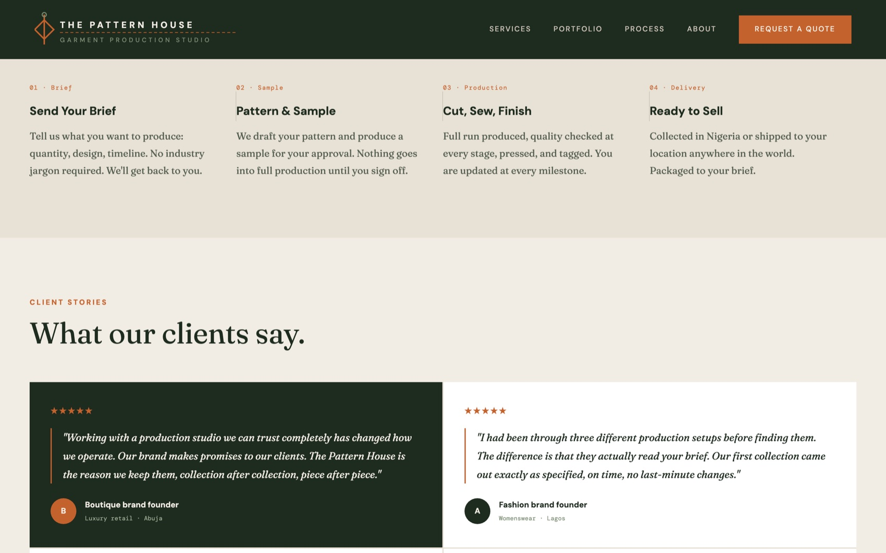
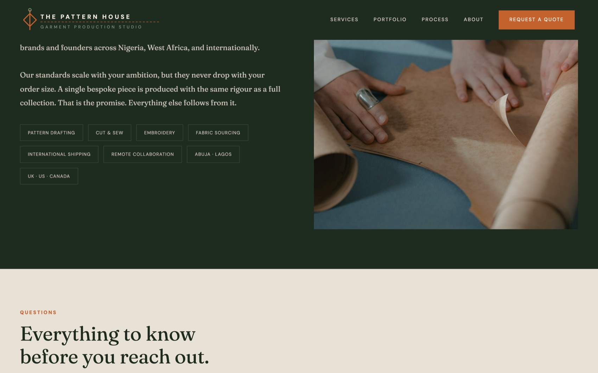

The Pattern House
A garment production studio's digital acquisition platform. I designed and built the live site at thepatternhouse.co as a sales product, not a brochure. Every page exists to move a stranger from "I need a factory I can trust" to a qualified inquiry sitting in a CRM pipeline, with the operational detail a production studio actually needs to quote already captured.

Garment production in Nigeria runs on WhatsApp threads, PDF quotes, and referrals, so inquiries arrived unstructured and inconsistently qualified.
There was no pipeline, no source visibility, and every lead demanded rounds of manual back-and-forth just to learn the garment type, volume, timeline, and location before anyone could price the job. Real leads were landing with zero attribution, so the business could not even answer "where did this client come from."
I treated the website as the top of a sales system rather than a standalone site.
- Designed the inquiry form as a qualification instrument that captures the exact operational data a factory needs to triage and quote, so the first human touch is a quote conversation, not a discovery interrogation.
- Anchored the flow to a real 10-stage B2B production pipeline, from New Inquiry to Delivered and Closed Won, so a form submission maps cleanly onto how a factory actually sells.
- Stood up a CRM as the system of record, with a warmed sending domain and a lifecycle process behind it rather than an inbox.
- Instrumented the whole funnel so every inquiry carries its traffic source, campaign, and referrer, closing the attribution gap that made early leads unreadable.
The "Request a Quote" form is the product's core. It asks for the fields a factory needs to price without a phone call: brand or project name, contact details, country and region, a production description, and an approximate quantity banded to real manufacturing tiers.
On submit, a server-side function creates the CRM record, fires an instant branded acknowledgement email, and fans the lead out to the sales team in real time. I closed the attribution hole by capturing the CRM cookie, UTM parameters, and referrer on the page, so leads stop landing as "offline" and every inquiry arrives source-tagged.



- A production website on Astro, deployed to Cloudflare Pages through a GitHub Actions pipeline, so every merge auto-builds and ships.
- Service pages for the three offerings plus a four-step process, portfolio, and studio sections.
- A server-side inquiry workflow, built as a Cloudflare Pages Function, that writes leads straight into the CRM.
- HubSpot CRM with a 10-stage pipeline and custom lead-qualification properties, connected to Zoho Mail and Zoho Cliq.
- An automated acknowledgement email on every submission via Resend, plus an internal notification fan-out to the sales channel the moment a lead lands.
- GA4 and Google Tag Manager with a full lead-funnel event model and a generate_lead key event, plus Google Search Console.
- Structured data, a sitemap, and an AI-search-visibility layer that classifies traffic from AI answer tools as its own channel, so the studio stays legible to both search engines and AI discovery.
- Website as a sales product. I scoped the site around one job, converting a qualified inquiry, and built the analytics, CRM, and notification plumbing to match, rather than shipping a static page and hoping.
- Qualify at capture, not on the call. The form asks for quantity, location, and production detail up front, banded to the studio's real minimums, so the manual back-and-forth that used to precede every quote is largely eliminated before a human is involved.
- Recover discoverability, then defend it. After a visibility gap surfaced, I layered SEO structured data, Search Console, and an AI-answer channel model so the studio is findable in both classic search and AI-assisted discovery, not just by referral.
The platform turned inbound manufacturing interest into a structured, attributed pipeline. Real inquiries came through the form and converted into paying B2B production clients within weeks of launch. The CRM replaced scattered WhatsApp and PDF tracking with a single system of record, and once attribution was wired in, every new lead became traceable to its source.